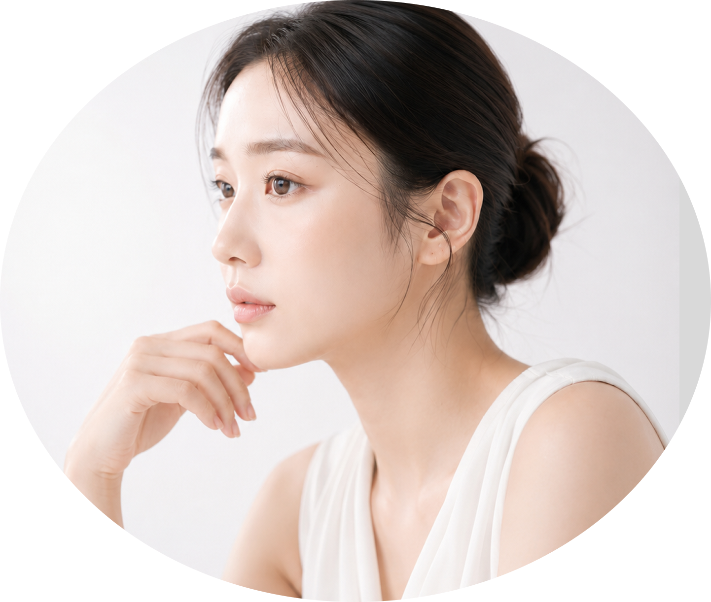
눈은 작은 차이만으로도 인상이 크게 달라지는 부위입니다.
개인의 눈꺼풀 두께, 눈매 방향,피부 여유, 얼굴 비율을 함께 고려해
과하지 않고 오래 어울리는 눈매를 디자인합니다.
매일 반복되던 작은 불편함,눈매를 다시 살펴봐야 하는 신호일 수 있습니다.
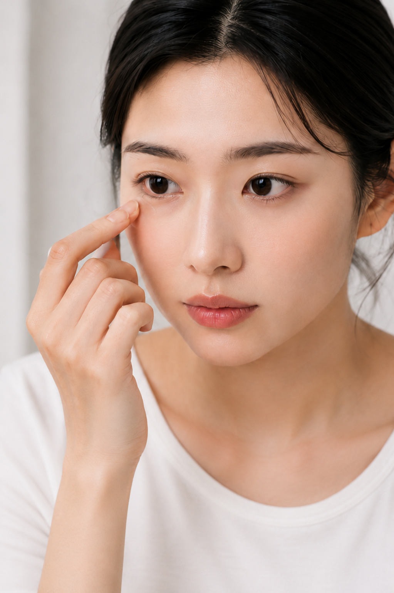
피곤해 보인다는
말을 자주 듣나요?
편하게 떠도 졸려 보인다면
눈 뜨는 힘을 확인해 볼 수 있습니다.
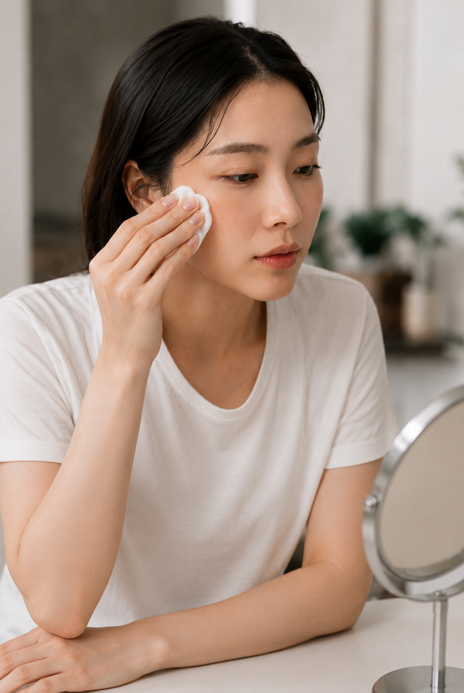
화장을 지우면
눈매가 흐려지나요?
메이크업으로 또렷해 보이던 라인이
민낯에서는 덮이거나 흐려 보일 수 있습니다.
사진 찍을 때마다
같은 각도만 찾게 되나요?
정면 사진에서 양쪽 눈 크기나 라인 차이가
더 도드라져 보일 수 있습니다.
눈 위가 무겁고
답답해 보이나요?
눈 위가 무거워 보이면
답답한 인상으로 보일 수 있습니다.
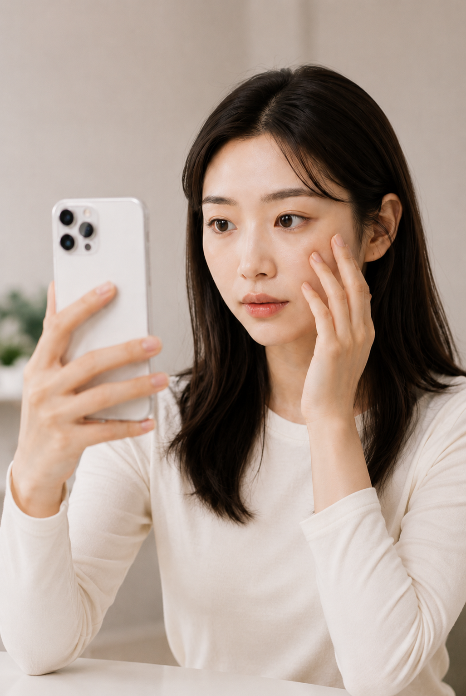
예전에 수술했지만
계속 신경 쓰이나요?
라인의 높이보다 현재 눈 상태와
조직에 맞춰 다시 계획해야 할 수 있습니다.
눈을 뜨는 힘, 피부와 지방의 두께,눈매의 균형 등
다양한 요소를 함께 확인해야 어울리는 라인을 찾을 수 있습니다.
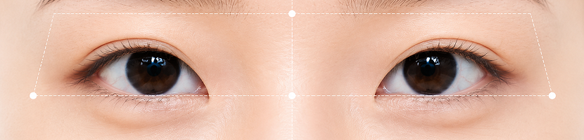
눈의 구조와 얼굴의 균형을 바탕으로
자연스럽고 조화로운 결과를 만듭니다.
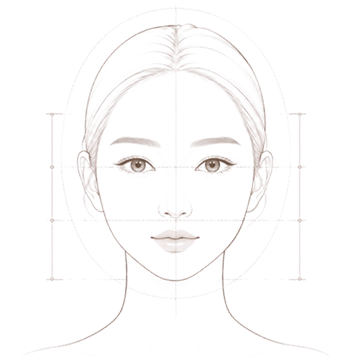
눈만 보지 않습니다.
얼굴형, 눈썹 위치, 전체 인상까지
함께 고려합니다.
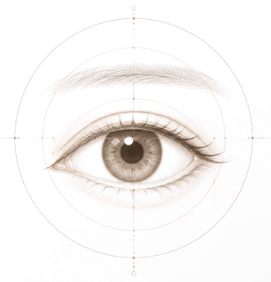
과한 라인은 권하지 않습니다.
자연스럽게 어울리는 범위안에서
필요한 변화만 제안합니다.
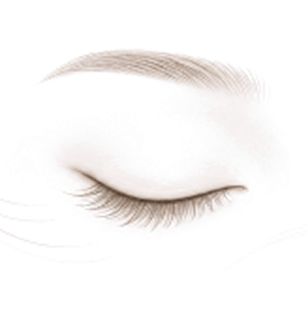
정면만 보지 않습니다.
다양한 표정과 각도에서
어색하지 않은 라인을 설계합니다.
눈꺼풀 손상을 최소화해 자연스러운 라인을 만드는 방식으로, 흉터 부담이 적고 회복이 빠릅니다.
눈꺼풀의 피부와 지방, 근육 상태를 직접 확인해 라인을 정교하게 만드는 방식으로, 처짐이 있거나 또렷한 라인을 원하는 경우에 적합합니다
눈을 뜨는 힘과 눈꺼풀의 구조를 함께 고려해 졸려 보이는 인상을 개선하고, 보다 또렷하고 균형 잡힌 눈매를 완성합니다.
개인의 눈 모양과 비율에 맞춰 앞·뒤·밑트임을 계획해 답답해 보이는 인상을 완화하고, 시원하고 자연스러운 눈매를 만듭니다.
늘어진 윗눈꺼풀과 눈 밑의 처짐·지방을 세밀하게 정리해, 무겁고 피곤해 보이는 인상을 한층 밝고 편안하게 개선합니다.
기존 수술의 라인과 유착, 흉터 및 조직 상태를 면밀하게 분석해 불만족의 원인을 교정하고, 자연스러운 눈매를 다시 설계합니다.
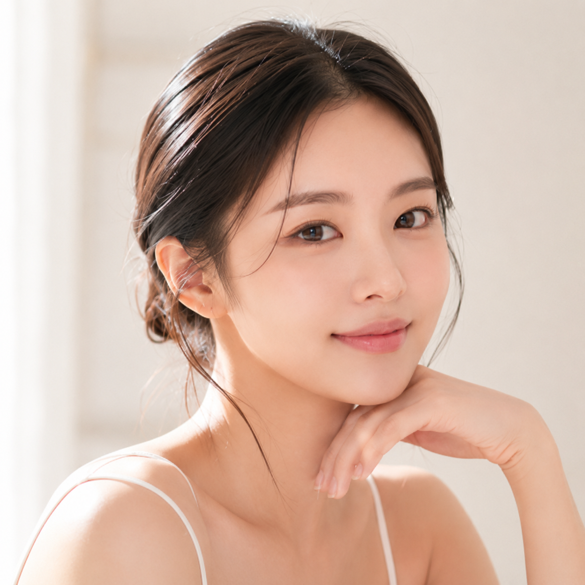
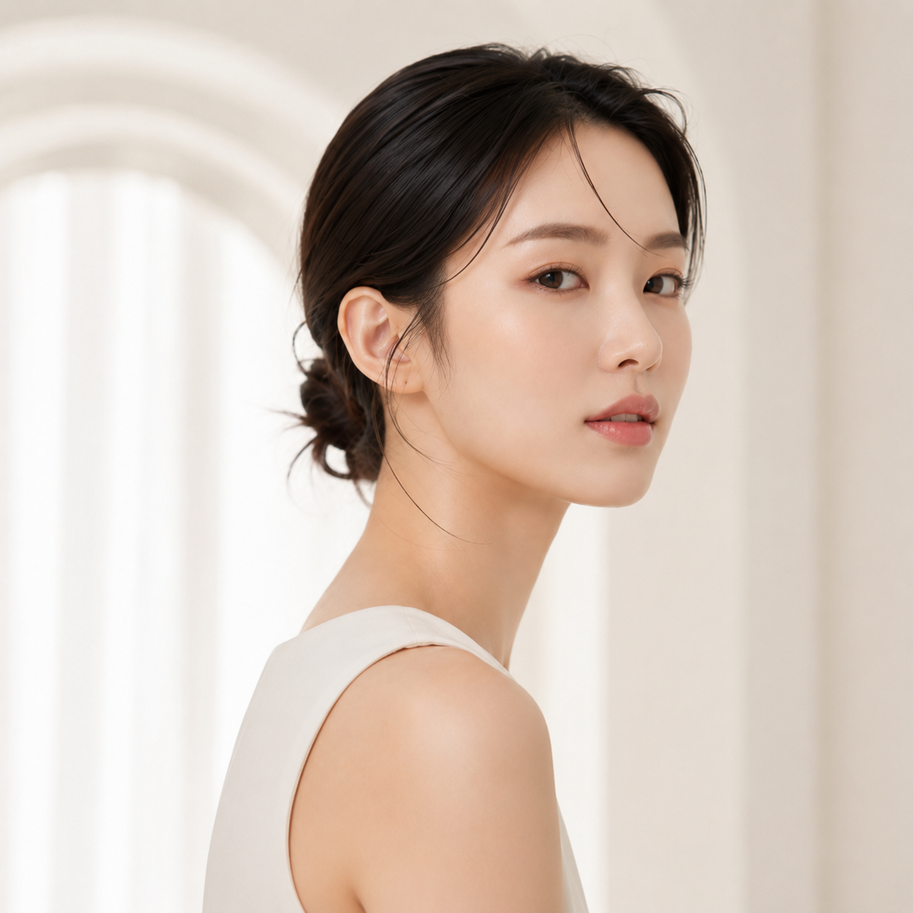
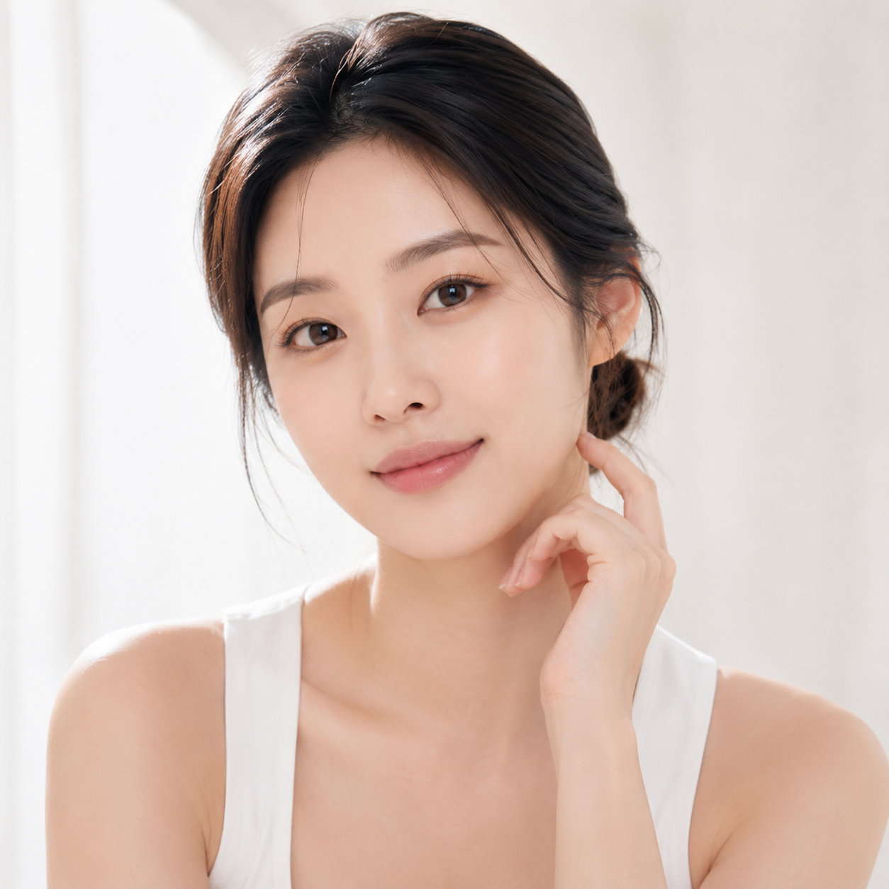
과하지 않게, 눈매에 필요한 변화만 담았습니다.
Before
After
자연유착 쌍꺼풀
수술 후 3개월
Before
After
비절개 눈매교정
수술 후 3개월
Before
After
앞트임 · 뒤트임
수술 후 3개월
정밀한 진단과 체계적인 수술 시스템을 바탕으로
수술 후 회복 과정까지 꼼꼼하게 살핍니다.
01
슬릿램프 정밀검사
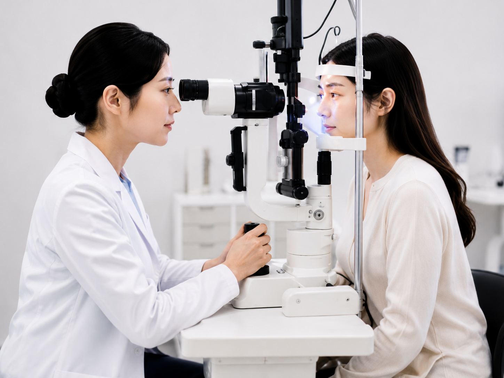
눈 표면과 눈꺼풀 상태를
세밀하게 확인합니다.
02
디지털 눈매 분석
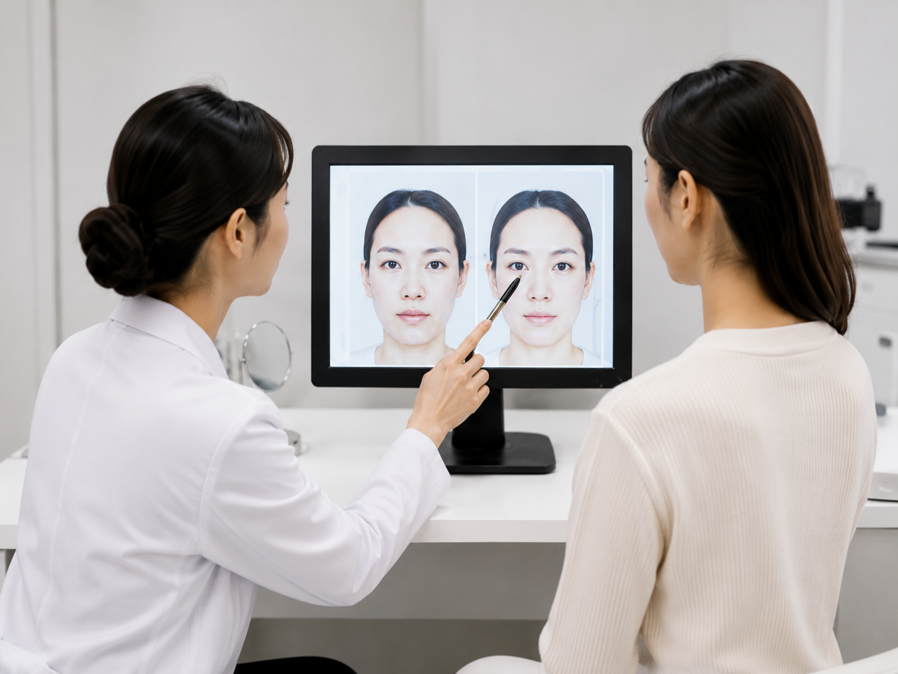
얼굴 비율과 눈매 방향을
입체적으로 분석합니다.
03
고배율 확대 수술
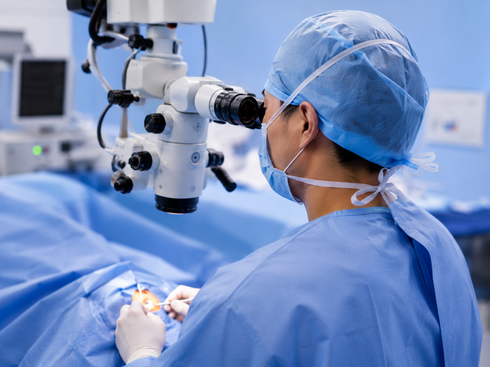
미세한 조직까지 정교하게
확인하며 수술합니다.
04
4K 내시경 시스템
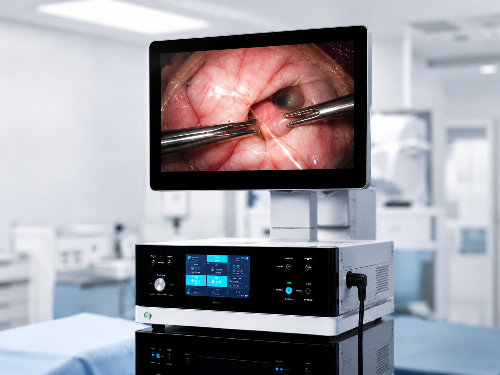
정확한 시야 확보로
섬세한 수술을 돕습니다.
05
회복 케어 장비
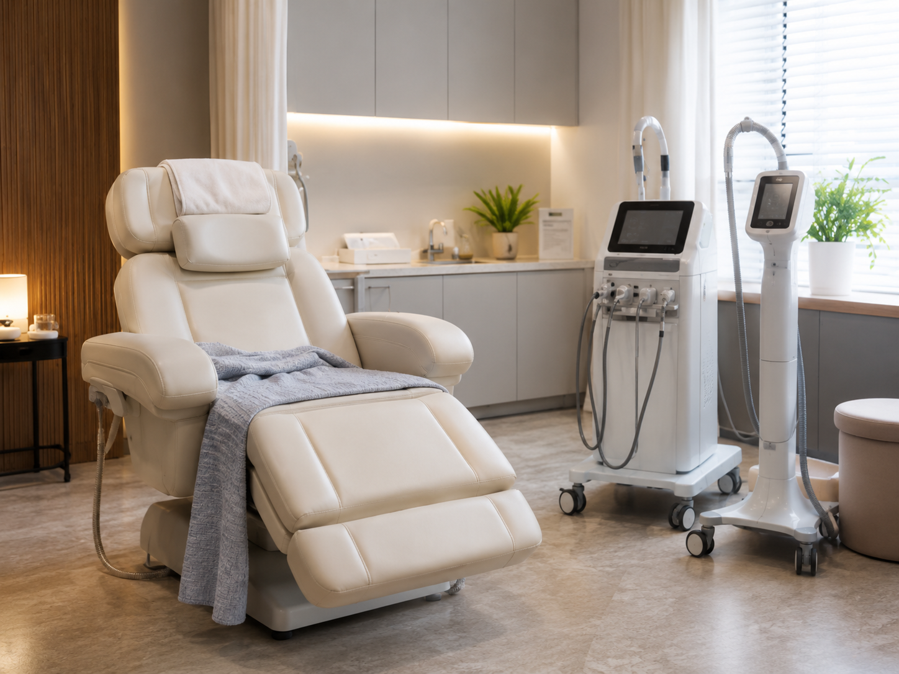
회복 과정과 붓기 관리를 위한
케어를 진행합니다.
과한 변화보다 본래의 인상과 자연스럽게 이어지는
균형 있는 눈매를 디자인합니다.
간단한 정보를 남겨주시면 담당자가 확인 후
상담 가능한 시간을 안내해드립니다.
주소
경기 수원시 팔달구 권광로 199 온리아이타워 5층
진료 시간
월–금 : AM 10:00 ~ PM 07:00
토요일 : AM 10:00 ~ PM 04:00
(일요일 •공휴일 휴진)
대표전화
Tel. 031-238-8575
성함
연락처
관심 시술 (선택)
상담 희망 시간
상담 방법
상담 방법
개인정보 수집 및 이용에 동의합니다. 수집한 정보는 상담 목적 외에 사용되지 않습니다.